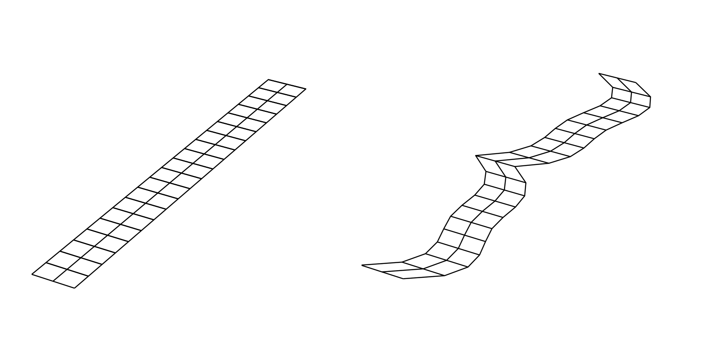
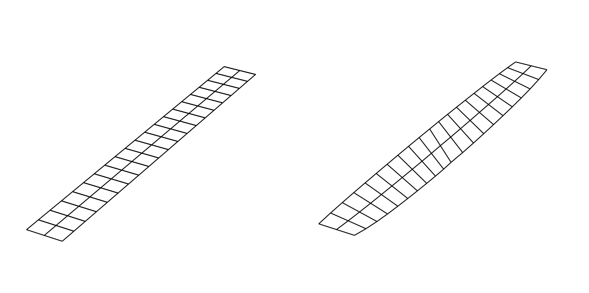

Geometry Creation and Manipulation¶
OpenAeroStruct contains two types of default surfaces: a simple rectangular lifting surface, and a wing modeled after a B777-type aircraft called the Common Research Model (CRM).
Explanation of design variables¶
We currently have eight design variables, which we will detail below. Sweep, taper, and dihedral each have one design variable defined for a single lifting surface, while twist, chord, xshear, zshear, thickness, and radius are arrays that contain values for specific spanwise locations along the surface.
Instead of directly controlling the nodal mesh points for the design variables defined as arrays along the span, we vary b-spline control points which influence a b-spline interpolation. For example, in the figure below, we control the green points as our design variables, which are the b-spline knots. The blue curve is interpolated from the green points and the blue curve is what would modify the aerodynamic mesh. In this way we can choose the number of design variables independently of the fidelity of the aerodynamic mesh.

In each of the images below, the left wing is the initial rectangular wing and the right wing is the perturbed wing based on the specific design variable.
Angle of attack¶
Angle of attack, or alpha, does not change the geometry of the lifting surface at all. Instead, it changes the incidence angle of the incoming flow. This affects the right-hand-side of the linear system that we solve to obtain the aerodynamic circulations.
Taper¶
The taper design variable is the taper ratio of the wing which linearly varies the chord of the wing. A value of 1.0 corresponds to a straight rectangular wing, whereas a value less than 1 corresponds to a tapered wing. Values greater than 1 are possible.

Sweep¶
The sweep design variable performs shearing sweep in which the planform area and the y-coordinate extents remain constant. Positive angles sweep back.

Dihedral¶
Positive dihedral rotates the wing such that the tip is higher than the root. As with taper and sweep, this linearly varies across the span.

Chord¶
Whereas taper ratio can only vary the chord linearly across the span, the chord design variable allows for arbitrary chord distributions, as shown below.

X Shear¶
This design variable changes the x-coordinate at each certain spanwise location, as shown below. It can be any arbitrary distribution. This is a more general form of the sweep variable.
Z Shear¶
This design variable changes the z-coordinate at each certain spanwise location, as shown below. It can be any arbitrary distribution. This is a more general form of the dihedral variable.

Twist¶
Below we show a wing with linear twist variation along the span. OpenAeroStruct is capable of arbitrary twist distributions.
Thickness¶
Control the thickness of the structural spar; can have any distribution. The thickness is added internally to the tubular spar, so we must impose a non-intersection constraint when optimizing that limits the thickness so it does not go past the physical boundary of a solid cylinder. Here we can’t reliably see thickness changes, so the color of the spar corresponds to thickness.

Radius¶
Control the radius of the structural spar; can have any distribution. With an aerostructural case, it would make physical sense to have some limit on the radius such that the spar is not larger than the thickness of the airfoil. You can set this manually when you set the design variable or you can use the experimental SparWithinWing component.

Multiple lifting surfaces¶
So far we have only discussed cases with a single lifting surface, though OpenAeroStruct can handle multiple surfaces. For example, you could have a case with a main wing surface and a tail surface as shown below.

Most components operate only on one lifting surface without regard for the others in the problem. Only two components need to have information from all lifting surfaces – AssembleAIC and VLMForces. AssembleAIC considers all lifting surfaces when it constructs the aerodynamic influence coefficient (AIC) matrix.
Utility Scripts¶
A few useful scripts can be found in geometry/utils.py, such as
writing the mesh to a Tecplot file
and
mirroring half-meshes to obtain the full mesh.